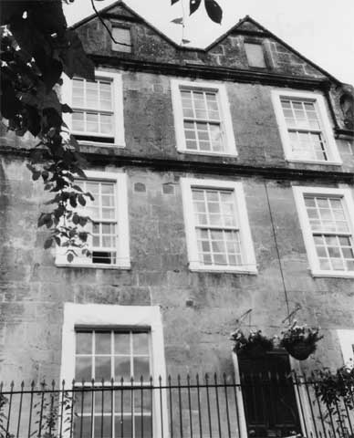

Type of building:
Mid mixed terrace
Listing:
Grade ll*
Plan and elevation:
Single pile, two units. 3 1/2 - storeys. Plus a single unit, single storey rear
extension.
Summary of the probable main building
history:
Mid 17th Century. Front remodelled about 1727. Early 19th Century alterations.
Late 20th Century extension.

East elevation
Exterior:
The front or east elevation is of ashlar construction upon a rubble stone plinth.
The roof is pitched with two gables. In the apex of the left gable an inscription,
now barely legible, is said to read “M - 1727” (Dobbie p. 90).
There are two sash windows on the ground floor flanking the entry, which is somewhat
to the right of centre. The dressed stone door case is ogee moulded. Both ground
floor windows are set in plain dressed stone surrounds with sills, the right hand
window (with six-over-six panes) is smaller than the left hand window (with eight-over-eight
panes). This latter window retains the iron fittings upon which former shutters
hung. Both windows appear to be late 18th Century or early 19th Century insertions
although the glazing bars are modern as is the case with the windows on the upper
storeys. Nevertheless, the window openings on the first and second floors are
early 18th Century in accordance with the dating on the gable. Each of these floors
has three nine-over-nine sashes (with stops for the upper sashes), set in slightly
projecting dressed stone moulded surrounds which are beaded on the inside edge
and ogee moulded on the outside edge and under the sill. These windows are symmetrically
arranged on the façade and in line vertically although out of line with
the ground floor windows. There is a continuous and heavy drip label above both
the first floor and second floor windows. To the left of each central window on
both floors there are two small square openings, which are fixed glazed but do
not penetrate to the interior. The function of these openings is not known. Each
of the two gables on the façade has a blocked window with a dressed stone
surround of ogee section. Above each window there is a straight drip label. The
gables are coped with finials. The return gable elevation is of rubble construction
with a blocked window visible at attic level. The gable has a coped parapet and
supports a chimney stack.
The rear, or west elevation, is constructed of rubble. The central section of the rear wall has been heightened and the pitched roof has been extended forward to create an additional room(s) on the upper storey. The roof on this section is hipped and may be late 18th or early 19th Century work. There is what appears to be a sealed stack on the north end of this elevation. A late 20th Century single storey extension under a cat slide roof projects from the rear wall. This replaces an earlier and larger extension, the outline of which is still visible.
Interior:
There are two rooms on the ground floor, the living room and the dining room,
and the front and rear entry form a cross entry arrangement, albeit the front
entry is now protected by modern partitioning and the rear entry is now the entry
into the extension. This later entry has a painted wood (oak?) and chamfered door
case and retains a pintle and other iron fittings of an earlier door. Wall thickness
through the entries is about 54cms. The staircase is by the former rear door and
is a modern insertion but probably occupies the same position as the staircase
it replaced although it is placed farther forward into the living room and away
from the wall compared to its predecessor, which was possibly a narrower semi-circular
stair. The staircase is lit by two splayed window openings. The stairs extend
to the second floor only although it is understood that the earlier stairs extended
to the attic (information from the owners). A repaired large stone depressed four-centred
arched fireplace of 18th Century date occupies the south gable wall of the living
room and provides a support for a boxed-in ceiling beam, most probably an inserted
RSJ. There is a sealed fireplace in the north gable wall of the dining room.
The first floor south front room has two step-in windows although wooden box seats have been inserted. In the same room there is an 18th Century small stone fireplace, beaded on the inside edges and ogee mouldings on the outside edges. This fireplace is now fitted with a mid to late 19th Century arched iron grate. Projecting through the ceiling of the second floor room directly above is part of a 24cms thick oak tie-beam. The rest of the beam is presumably concealed by the ceiling.
The roof timbers consist of massive waney edge purlins with waney edge rafters (no principals) laid flat on their weak plane, a clasped and yoked ridge piece and curved collars. The gable windows are obstructed by the curved cruck-like constructional timbers of the gables. The gables themselves are internally constructed of small squared stone blocks. The chimney breast on the south end gable wall of the main building is superimposed upon an earlier chimney breast, to the left of which is a blocked window with a timber lintel. The opposing gable abutting the neighbouring property to the north has a blocked vent with a dressed stone surround.
Date & development:
The evidence of the two unit cross entry plan, the gables on the façade
and, in particular, the “old fashioned” roof structure, indicates
a house older than the dated 1727. It is suggested that 1727 is the date of a
remodelling of a 17th Century tall village centre house of some status when a
new ashlar façade was constructed as a skin on the existing fabric and
fashionable symmetrical windows were inserted, at least on the first and second
floors. The window arrangement on the ground floor at this time is not known,
the existing windows were the result of further alterations in the late 18th or
early 19th centuries. As far as the dating of the oldest visible structure is
concerned, about 1640 or immediate post Civil War would not seem to be too far
wrong. The house is younger than its northern neighbour (BE030A) to which it is
attached. (BE030A has quoins and from its constructional features based upon a
visual external examination appears to be about 1620-1630.) At the same time,
the roof construction is unlikely to put the house at a date beyond 1660
References & bibliography:
- B.M. Willmott Dobbie “An English Rural Community”, Bath University
Press, 1969
- Sketch by J. Irvine, 1867, Bath Reference Library
- Victoria Art Gallery - Bath
Reference Pictures
| Rear
(west) elevation |
18th
century depressed four-centred arched fireplace |
Survey Drawings
| Ground
Plan |
Section |
South
Elevation |
Images from the Archives
| East
elevation on September 7 1867. From a sketch by J Irvine |
Sketch of 3rd October 1834 |